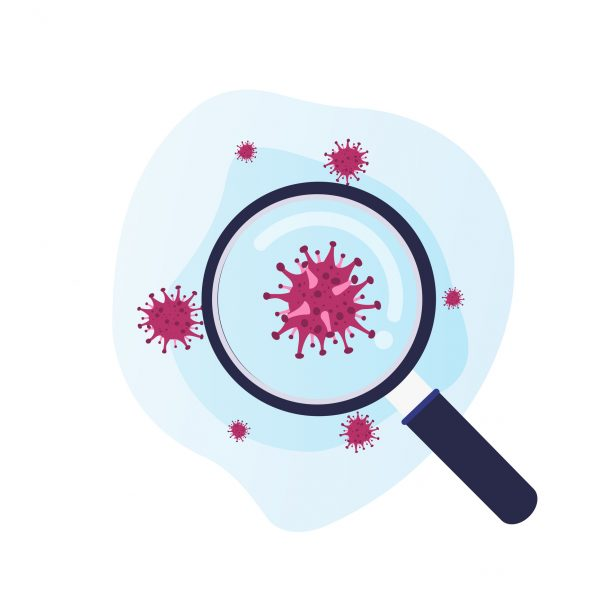

Por qué la ciencia sigue el rastro del ‘paciente cero’ del coronavirus
Un hombre de 55 años de la provincia de Hubei (China) podría haber sido la primera persona en contraer el COVID-19, la enfermedad causada por el coronavirus SARS-CoV-2.Así aparece publicado en el diario
South China Morning Post , que cita datos del gobierno chino a los que habría tenido acceso ese medio.Según la información, el varón habría contraído la enfermedad el 17 de noviembre de 2019.
De momento, estos datos no han sido confirmados por las autoridades chinas ni tampoco han sido validados por la comunidad científica.Lo que se sabe es que el 31 de diciembre de 2019, la Comisión Municipal de Salud y Sanidad de Wuhan (en la provincia de Hubei) informó sobre un agrupamiento de 27 casos de neumonía de causa desconocida con inicio de síntomas el 8 de diciembre.
Los pacientes habían estado expuestos a un mercado mayorista de marisco, pescado y animales vivos en la ciudad de Wuhan, aunque la fuente del brote sigue sin estar identificada.El mercado se cerró el 1 enero de 2020 y el 7 de enero las autoridades chinas identificaron como agente causante del brote un tipo de virus de la familia
Coronaviridae , al que denominaron SARS-CoV-2.
De confirmarse la información publicada por el medio chino, esa persona sería el ‘paciente cero’, lo que en epidemiología se conoce como caso primario o caso índice auténtico.'El caso primario es el caso inicial de un brote de una enfermedad infecciosa localizada, el que introduce una infección en una familia, grupo o red', explica a SINC Richard A. McKay, investigador del departamento de Historia y Filosofía de la Ciencia de la Universidad de Cambridge (Reino Unido).
Desde la Sociedad Española de Epidemiología (SEE) prefieren referirse a esta persona como caso índice auténtico.'Hay quienes hablan de casos primarios y casos secundarios pero en el estudio de contactos quizás queda un poco más claro si hablamos de caso índice, casos secundarios y el caso índice auténtico, que sería el primero que inicia el brote epidémico', aclara a SINC Joan Caylà, epidemiólogo de la SEE y presidente de la Fundación de la Unidad de Investigación de Tuberculosis de Barcelona.
Los primeros casos de otros países también importan
A veces el primer caso identificado por el sistema sanitario (caso índice o paciente 1) no coincide con el caso que da origen a la epidemia (caso índice auténtico o paciente cero), lo que dificulta saber cómo se originó el brote.
'Si el paciente 1 no coincide con el paciente cero, toda la trazabilidad de la propagación de la infección se complica, puesto que quiere decir que otra persona infectada puede estar transmitiendo el virus', señala a SINC César Velasco, epidemiólogo y director de la Agencia de Calidad y Evaluación Sanitarias de Cataluña (AQuAS).
Los expertos coinciden en la importancia de identificar a la persona que inició el brote para trazar un patrón sobre el origen del virus y sus causas.Como apunta Caylà, a partir del caso índice auténtico podríamos saber si esta persona tuvo contacto con murciélagos, con pangolines o con algún otro animal.'Esto ayudaría a precisar cómo saltó de animales a personas', detalla.
En paralelo, los científicos se afanan también en encontrar los primeros casos de cada país afectado por la pandemia.Hace unos días se publicaba una carta en la revista
The New England Journal of Medicine en la que los científicos apuntaban al posible primer caso alemán, un varón de 33 años que pudo haber contraído la enfermedad tras estar en contacto en una reunión de trabajo con una mujer china cerca de Múnich el 20 y 21 de enero.La mujer, residente en Shanghái, empezó a experimentar síntomas en el vuelo de vuelta a su país, el 22 de enero y a los pocos días dio positivo en COVID-19.
Según los autores, la transmisión del virus pudo haberse producido cuando la mujer no tenía síntomas aún.El varón alemán empezó a encontrarse mal, con dolor de garganta, escalofríos, dolor de cabeza, fiebre alta y tos productiva desde el 24 de enero, pero a los pocos días se sintió mejor y volvió a trabajar el 27 de enero.Al informar a la compañía, le hicieron el test por COVID-19 y dio positivo.Los autores creen que pudo contagiar a otros dos empleados antes de desarrollar los síntomas.
Una labor de detectives
En el caso de Estados Unidos, una investigación publicada en esa misma revista el pasado 5 de marzo informaba del posible primer caso confirmado en el país.Se trataría de un hombre de 35 años que el 19 de enero acudió a una clínica de urgencias en el condado de Snohomish (Washington) con tos y fiebre.Según contó al personal sanitario, había viajado a Wuhan para visitar a su familia y regresó a Washington el 15 de enero.
Pero la investigación epidemiológica avanza casi tan rápido como el virus y este pudo no haber sido el caso índice de EE UU.En una investigación posterior publicada el 13 de marzo en
The Lancet , los autores afirmaron que el caso identificado en el condado de Snohomish fue el primero confirmado en el estado de Washington, pero no en todo el país.En su artículo, los científicos reportan otro caso previo, una mujer sexagenaria que viajó el 25 de diciembre a Wuhan para visitar a familiares y regresó a Illinois el 13 de enero, desarrollando la enfermedad a los pocos días.
'Los epidemiólogos realizan un verdadero trabajo de detectives, tratando de identificar a casos y a sus contactos para remontar al primer paciente.A veces es muy difícil encontrar al paciente índice, sobre todo cuando han pasado varios meses', declara a SINC Adelaida Sarukhan, inmunóloga y redactora científica en el ISGlobal.
En busca del origen del brote español
En España, el primer caso confirmado por COVID-19 se identificó en La Gomera el 31 de enero y se trataba de un turista alemán que había tenido contacto con un paciente con la enfermedad en su país.No obstante, aún se desconoce el origen del brote que despuntó a principios de marzo.
'Tendría interés averiguarlo para ver si los primeros pacientes que introdujeron el coronavirus en España procedían del norte de Italia, si eran un grupo o cómo fue y a qué sitios de España fueron.Parece que la mayoría habrían ido del norte de Italia a la comunidad de Madrid y eso en parte explicaría que Madrid esté más afectada', baraja Caylà.
Además del meticuloso seguimiento de los pacientes y de sus contactos, el análisis genético molecular también ayuda a identificar los posibles casos índice, junto a otras herramientas computacionales.
'Existen métodos que comparan los datos del mundo real en la red de personas infectadas con las simulaciones de la propagación de la enfermedad en la misma red, suponiendo un nodo determinado como paciente cero', afirma Velasco.
Con epidemias con menos casos, como brotes de sarampión, tuberculosis o infecciones de transmisión sexual, al estudiar a los pacientes y a sus contactos, se suelen encontrar los casos índice.
El caso del VIH: el peligro de dar nombres y apellidos
Una vez que se identifican a estas personas, los expertos hacen hincapié en que no se difundan sus datos personales para evitar que se les culpabilice.'Si se identifica el caso índice, no se trata de revelar su identidad, lo cual podría ser muy estigmatizante.Se trata de obtener la mayor información posible sobre los comportamientos o factores que pueden favorecer que se repita esta situación en el futuro', recalca la inmunóloga del ISGlobal.
El caso más famoso de paciente identificado con nombre y apellidos y acusado erróneamente de introducir el VIH en EE UU fue el del auxiliar de vuelo canadiense Gaétan Dugas (1952-1984).En 1984, un estudio publicado en la revista
The American Journal of Medicine apuntaba a que varias infecciones por VIH en ese país podrían atribuirse a una misma persona.
Posteriormente, el periodista Randy Shilts que en su libro
And the band played on (1987) documentaba el brote de VIH en el país, publicó el nombre y apellidos del auxiliar de vuelo, calificándolo como ‘paciente cero’, una etiqueta que le persiguió hasta su muerte.Investigaciones posteriores demostraron que no era así.Un trabajo publicado en
Nature en 2016 reveló, tras analizar el genoma completo de Dugas, que no existían pruebas biológicas ni históricas para creer que él desencadenara la epidemia en Norteamérica.
'El concepto de ‘paciente cero’ suena científico pero es cualquier caso menos eso.De hecho, el término no existía antes de la epidemia del SIDA y fue creado por accidente', recuerda McKay, coautor del estudio de
Nature y autor de
Patient Zero and the Making of the AIDS Epidemic (2017).
En el libro, el investigador narra cómo investigadores de los Centros para el Control de Enfermedades de Estados Unidos crearon el término de ‘paciente cero’ sin darse cuenta, cuando realizaban los primeros análisis sobre la entonces aún emergente crisis de saludpública.Ese concepto y la identidad del hipotético primer caso fueron los que utilizó erróneamente el periodista Shilts en su libro, que se convirtió en un
best seller .
Para no repetir los mismos errores con la pandemia del coronavirus, McKay recomienda que cuando se escriba sobre el proceso de búsqueda de casos y contactos 'siempre se haga con extremo cuidado ya que existen fuertes impulsos sociales para atribuir responsabilidad y culpa'.
Posted On: 2020-03-29T00:00:00
Posted By: Laura Chaparro / Agència SINC

Content Date: 2020-03-29
Download Date: 2021-04-21
Document ID: L0C04AOYR